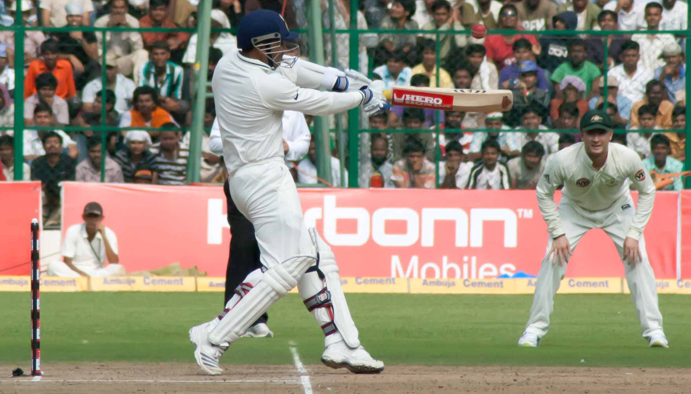

all photo gallary
sachin tendulkar
virendra sehwag
gautam gambhir
virat kohli
yuvraj singh
suresh raina
dhoni
- sachin tendulkar

more
-
Indian batting great Sachin Tendulkar mentioned that his 200 against South Africa remains to be his top innings in the 50-over format.
Tendulkar allured the cricket fans with his captivating shots and breathtaking innings in an illustrious international career of 24 years.
- virendra sehvag

more
-
Virender Sehwag pronunciation (help·info) (born 20 October 1978) is a former Indian cricketer
who represented India from 1999 to 2013. Widely regarded as one of the most destructive opener,[1] he played for Delhi Capitals in IPL and Delhi and Haryana in Indian domestic cricket. He played his first One Day International in 1999 and joined the Indian test side in 2001
all details